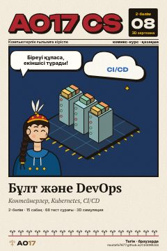

AO17 CS курсы / 2-бөлім: 3D зертхана / Бұлт және DevOps

Бұлт және DevOps · 3-сабақ · ≈20 мин · 2 қадам · 4 сұрақ
Жүктеме және кешігу
Load & Latency
Кезек теориясы: сервер 100% жүктелгенде кешігу шексізге ұмтылады.
Кино-түсіндіру: сабақтың өзегі бір минуттық мультфильмде. Мәтіні төменде.
Фильмнің мәтіні (сабақтың қадамдарынан құрастырылған)
- Сұрақ. μ = 100, λ = 75 болса, орташа кешігу қанша?
- Бейне. Жол: машиналар аз болса: еркін жүресің. Жүктеме 90%-ға жеткенде кішкене тежеу де кептеліс тудырады. 100%-да: тұрып қаласың.
- Болжа. μ = 100, λ = 75 болса, орташа кешігу қанша? Жауап: 40 мс. W = 1/(100 − 75) = 1/25 с = 40 мс.
- Көр. 1-қадам, «Шамадан тыс жүктеме». Бір сервер секундына μ = 100 сұранысты өңдейді. Келетін сұраныстар λ болса, жүктеме (utilization) ρ = λ/μ. Сұраныстар кездейсоқ келетіндіктен, кейде қатарынан бірнешеуі келіп, кезекте күтеді.
- Көр. 2-қадам, «SLO-ға жет». SLO (service level objective): сервиске қойылған мақсат: «кешігу ≤ 50 мс». Оған жету үшін неше сервер керек? Жүктеме n серверге тең бөлінсе, әрқайсысына λ/n келеді:
- Көр. Нақты әлемде: SLO, SLI (өлшенетін көрсеткіш, мысалы p99 кешігу) және SLA (клиентпен шарт, бұзылса: айыппұл): SRE (site reliability engineering) тәжірибесінің негізі.
- Түйін. Кезек теориясы: сервер 100% жүктелгенде кешігу шексізге ұмтылады.
- Түйін. Жиі қате: λ = 1200 сұраныс/с, μ = 100, SLO 50 мс. Неше сервер керек? Жауап: «12». Дұрысы: «15». n ≥ 1200/80 = 15. 12 сервер: 100% жүктеме (шексіз кешігу).
1Шамадан тыс жүктеме
Идея
Бір сервер секундына μ = 100 сұранысты өңдейді. Келетін сұраныстар λ болса, жүктеме (utilization) ρ = λ/μ. Сұраныстар кездейсоқ келетіндіктен, кейде қатарынан бірнешеуі келіп, кезекте күтеді.
Кезек теориясы (M/M/1 моделі) бойынша орташа уақыт:
W = 1 / (μ − λ)λ ≥ μ болса: кезек шексіз өседі: жүйе шамадан тыс жүктелген.
Түйсік
Жол: машиналар аз болса: еркін жүресің. Жүктеме 90%-ға жеткенде кішкене тежеу де кептеліс тудырады. 100%-да: тұрып қаласың.
Есептеп көрейік
4 сервер, 800 сұраныс/с: әр серверге 200 > 100: шамадан тыс, кешігу шексіз (сұраныстар таймаутқа түседі).
Бір серверде:
- λ = 50: W = 1/50 с = 20 мс
- λ = 80: 1/20 = 50 мс
- λ = 90: 1/10 = 100 мс
- λ = 99: 1/1 = 1000 мс
Жүктеме 80%-дан 90%-ға өскенде кешігу екі есе, 99%-да: 20 есе.
Нақты әлемде
Сондықтан серверлерді «100% тиімді» жүктеу: қате. Google SRE кітабы сыйымдылықты 50-70% жүктемеге жоспарлауды ұсынады: қалғаны: кенеттен келетін толқындарға қор.
💡 Түйін: 3D-дегі кезектің ұзындығына қара: жүктеме 100%-ға жақындағанда ол шексіз өседі.
Тереңірек: Литтл заңы және неге M/M/1 «құйрығы» ауыр
Литтл заңы (1961): кез келген тұрақты жүйеге жарайды, үлестірімге тәуелсіз:
L = λ · WL: жүйедегі орташа сұраныс саны, λ: келу жиілігі, W: жүйеде болу уақыты. Мысал: 800 сұраныс/с, W = 50 мс → бір мезгілде 40 сұраныс «ұшуда». Сервер 40 параллель байланысты ұстай алуы керек.
M/M/1 (Пуассон ағыны, экспоненциалды қызмет уақыты, бір сервер) үшін:
W = 1 / (μ − λ), ρ = λ / μ, кезектегі орташа саны L_q = ρ² / (1 − ρ)ρ = 0.9 → L_q = 8.1; ρ = 0.99 → L_q = 98. Кезек 1/(1 − ρ) ретінде өседі: сондықтан сыйымдылықтың соңғы пайыздары кешігуді ушықтырады.
Бір кезек, көп сервер (M/M/c) n бөлек кезектен (бізде) жақсырақ: бос сервер кезектен келесі сұранысты алады: дүкендегі «бір ортақ кезек → кез келген бос касса» неге тиімді екенінің математикасы.
Енді сен
Қазір 12 сервер, 800 сұраныс/с. Серверлерді азайтып (мысалы, 4-ке), жүйе жүктемені көтере алмайтын күйді көр.
Өзіңді тексер
μ = 100, λ = 75 болса, орташа кешігу қанша?
Жауабы мен түсіндірмесі
Дұрыс жауап: 40 мс
W = 1/(100 − 75) = 1/25 с = 40 мс.
Неге жүктеме 50%-дан 95%-ға өскенде кешігу 10 есе өседі?
Жауабы мен түсіндірмесі
Дұрыс жауап: W = 1/(μ − λ): бос сыйымдылық (μ − λ) 50-ден 5-ке, яғни 10 есе азаяды
Кешігу бос сыйымдылыққа кері пропорционал, жүктемеге емес. Сондықтан соңғы пайыздар ең «қымбат».
2SLO-ға жет
Идея
SLO (service level objective): сервиске қойылған мақсат: «кешігу ≤ 50 мс». Оған жету үшін неше сервер керек?
Жүктеме n серверге тең бөлінсе, әрқайсысына λ/n келеді:
W = 1 / (μ − λ/n) ≤ 0.05 с → λ/n ≤ 80 → n ≥ λ / 80Түйсік
50 мс: бір сервер 80%-дан аспағанда. Демек әр серверде 20% «тыныс алу» қоры болуы керек.
Есептеп көрейік
λ = 800: n ≥ 800/80 = 10 сервер.
- 9 сервер: 800/9 ≈ 88.9 → W = 1/11.1 ≈ 90 мс ✗
- 10 сервер: 80 → 50 мс ✓
- 12 сервер: 66.7 → 30 мс (артық шығын)
Нақты әлемде
SLO, SLI (өлшенетін көрсеткіш, мысалы p99 кешігу) және SLA (клиентпен шарт, бұзылса: айыппұл): SRE (site reliability engineering) тәжірибесінің негізі. Шын жүйелерде орташа емес, p99 (100 сұраныстың ең баяу 1-і) өлшенеді: пайдаланушыларды ең баяу сұраныстар ашуландырады.
⚠ Жиі қате: орташа кешігуге қарау. Орташа 50 мс болса да, p99: 500 мс болуы мүмкін: әр 100-ші пайдаланушы жарты секунд күтеді.
Енді сен
800 сұраныс/с кезінде кешігу ≤ 50 мс болатын ең аз сервер санын тап.
3D симуляцияда орында
- 800 сұраныс/с кезінде кешігу ≤ 50 мс болатын ең аз сервер санын тап
Өзіңді тексер
λ = 1200 сұраныс/с, μ = 100, SLO 50 мс. Неше сервер керек?
Жауабы мен түсіндірмесі
Дұрыс жауап: 15
n ≥ 1200/80 = 15. 12 сервер: 100% жүктеме (шексіз кешігу).
Неге SRE-лер орташа кешігуге емес, p99-ға қарайды?
Жауабы мен түсіндірмесі
Дұрыс жауап: Орташа ең баяу сұраныстарды жасырады, ал пайдаланушылар дәл соларды сезеді
Бір бетті ашу ондаған сұраныстан тұрса, ең баяуы бүкіл беттің уақытын анықтайды. Сондықтан «құйрық» (tail latency) маңызды.
Сабақ AO17 командасының INSIDE TECH 3D платформасынан алынған: дәріс, тест және 3D симуляция - бір сабақтың бөліктері. Симуляция осы сайттың ішінде ашылады, прогресі «Менің шаңырағым» бетіне қосылады.